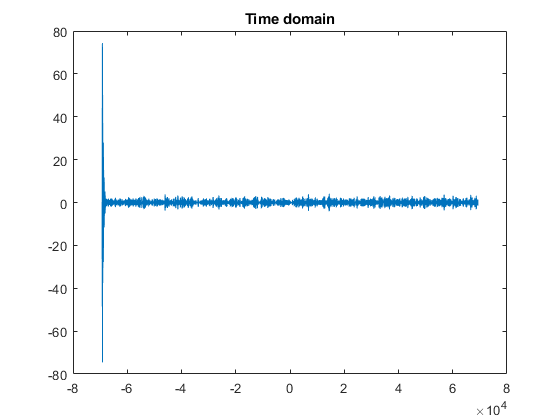

Contents
clear;
close all;
clc;
Question 6, 1&2
a=load('a.mat');
b=load('b.mat');
figure(1)
freqz(b.b,a.a)
figure(2)
zplane(b.b,a.a)
title('Z-plane of the channel system function')
part 3
[y,Fs] = audioread('HW1_Q4_voice.wav');
n=length(y);
y=y(Fs:2*Fs);
y=y';
fftsignal=fft(y);
fftsignal = fftshift(fftsignal);
f=Fs/2*linspace(-pi,pi,length(fftsignal));
figure(3)
plot(f,abs(fftsignal))
title('Magnitude')
figure(4)
plot(angle(fftsignal))
title('Phase')

part 4
output=filter(b.b,a.a,y);
figure(5)
plot(f,output)
title('Time domain')
outft=fft(output);
outft=fftshift(outft);
figure(6)
plot(f,abs(outft))
title('Frequency Domain(Magnitude)')
figure(7)
plot(angle(outft))
title('Frequency Domain(Phase)')

equalizer
figure(8)
zplane(a.a,b.b)
title('Zplane of the equalizer')
figure(9)
freqz(a.a,b.b)
title('phase and magnitude of the equalizer')